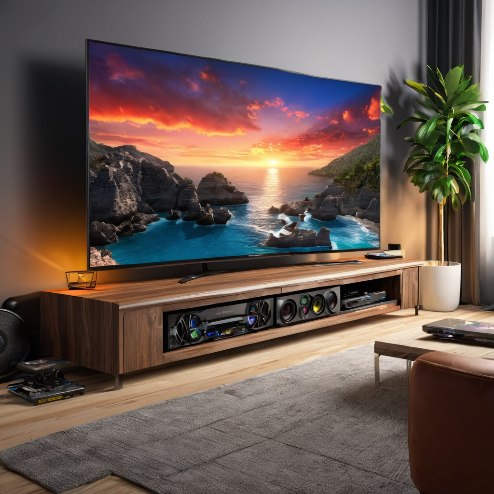

La velocidad de internet necesaria para streaming 4k es más crítica que nunca en 2026, especialmente con la explosión de plataformas de contenido y la creciente adopción de pantallas 4K en hogares mexicanos. Si bien Netflix, Disney+, HBO Max y otros servicios ya ofrecen streaming 4K HDR desde hace años, en este año la competencia se ha intensificado con nuevas ofertas de paquetes de internet que incluyen beneficios exclusivos como sin datos (zero-rating) o descuentos en suscripciones. Lo más importante: para un streaming 4K fluido sin *buffering*, necesitas al menos 25 Mbps por cada dispositivo en uso, pero la realidad en México es más compleja por la calidad de la red, la congestión horaria y el número de dispositivos conectados simultáneamente. En esta guía aprenderás cuánta velocidad te *realmente* hace falta, cómo elegir el mejor internet para streaming 4K en México, qué proveedores ofrecen lo mejor en 2026, y cómo evitar errores comunes que arruinan tu experiencia en pantallas grandes.
- Para streaming 4K en un solo dispositivo, necesitas 25 Mbps minimum, pero 50 Mbps garantizan mayor estabilidad, especialmente si usas Wi-Fi.
- Con 2 o más dispositivos transmitiendo 4K al mismo tiempo, recomiendo al menos 100 Mbps en paquetes de Fibra Óptica como Totalplay, Izzi o Infinitum.
- Infinitum (Telmex) ofrece la mejor cobertura nacional, pero Totalplay destaca por su red 100% fibra y soporte técnico más rápido.
- En 2026, Megacable y Dish ofrecen paquetes combinados (internet + satélite) ideales para colonias o zonas rurales donde no hay fibra.
¿Por qué la velocidad de internet necesaria para streaming 4k es más importante que nunca en 2026?
En México, el consumo de contenido en streaming ha crecido un 38% desde 2024, según la Cofetel. En 2026, más del 65% de los hogares tienen al menos un televisor 4K, y las plataformas ya ofrecen contenido en 4K HDR con altas tasas de bits (hasta 50 Mbps por canal en condiciones ideales). Sin embargo, la velocidad de internet necesaria para streaming 4k no es solo un número: depende de factores como el tipo de conexión (fibra vs. cable vs. satélite), la calidad del router, la distancia del punto de acceso, y si hay otros dispositivos descargando actualizaciones o trabajando en remoto.
Además, muchos proveedores en México ahora incluyen suscripciones a plataformas en sus paquetes: Izzi con Disney+ y HBO Max, Tota
Velocidad mínima por plataforma: ¿qué necesitas realmente?
Aunque las plataformas publican cifras oficiales, en la práctica la experiencia varía. Aquí te mostramos los requisitos reales, no solo los teóricos:
Netflix, Disney+, HBO Max y Star+ en México 2026
- Netflix: 25 Mbps son suficientes en teoría, pero en redes congestionadas (como en horario nocturno en muchas ciudades), necesitas 35–40 Mbps para evitar retransmisiones.
- Disney+: En 4K HDR recomienda 25 Mbps, pero su compresión HEVC es eficiente: 30 Mbps funcionan muy bien en Wi-Fi 5 o 6.
- HBO Max (ahora Max): En su versión 4K+ (HDR10+), usa hasta 40 Mbps. Si tu conexión es inconsistente, 50 Mbps evitan pausas.
- Star+: Similar a HBO Max, pero con menos opciones de ajuste automático: 35 Mbps son el mínimo recomendado para 4K sin interrupciones.
En resumen: para un solo televisor 4K transmitiendo en Max o Netflix, 30 Mbps son lo ideal. Pero si tienes una familia con varios dispositivos en uso…
¿Y si transmito 4k en múltiples dispositivos al mismo tiempo?
En hogares mexicanos típicos (sobretodo en CDMX, Monterrey y Guadalajara), es común que mientras los niños ven YouTube en tablets, los padres ven Netflix en la sala, y alguien más carga una actualización en su PC… con todo en 4K o HD. Aquí la recomendaciones de velocidad para múltiples dispositivos 4k son clave:
- 2 dispositivos en 4K: 50–60 Mbps mínimos (ideal: 80+ Mbps)
- 3 dispositivos en 4K: 90–100 Mbps (fibra óptica recomendada)
- 4+ dispositivos (incluyendo streaming HD y gaming): 150 Mbps o más (solo disponible con Totalplay o Infinitum en zonas urbanas)
Recuerda: si usas Wi-Fi 5 (802.11ac), la velocidad real suele ser un 40–60% menor que la contratada. Por eso, muchas veces necesitas contratar el doble de lo que te calcula la calculadora.
Comparativa de proveedores de internet 2026: precios, velocidades y streaming 4k
En 2026, el mercado mexicano de internet residencial está dominado por cinco jugadores clave: Totalplay, Izzi, Infinitum (Telmex), Megacable y Dish. Virgin Mobile ahora opera solo como MVNO y no ofrece internet fijo, así que no lo incluimos aquí. A continuación, una tabla actualizada con los planes más populares para streaming 4K:
| Proveedor | Plan estrella para 4k | Velocidad real (promedio) | Precio mensual (MXN) | Suscripciones incluidas | Wi-Fi 6 incluido |
|---|---|---|---|---|---|
| Totalplay | Fibra 200 | 195 Mbps | $499 | Max (HBO Max), Disney+, Star+ | Sí |
| Izzi | Izzi Fibra 150 | 140 Mbps | $449 | Disney+, HBO Max | Sí (desde abril 2026) |
| Infinitum (Telmex) | Infinitum 100+ | 95 Mbps | $389 | HBO Max, Star+ | No (solo Wi-Fi 5) |
| Megacable | Max 150 | 130 Mbps | $429 | Star+ | No |
| Dish | Dish Net 100 | 85 Mbps | $399 | Sin incluir | No |
Como ves, velocidad mínima para Disney+ y HBO Max 4k se cubre con casi todos los planes básicos en zonas urbanas, pero lo que marca la diferencia es la estabilidad y la baja latencia. Totalplay destaca por su red 100% fibra hasta el hogar (FTTH), lo que reduce la congestión y mejora la calidad del streaming. Izzi, por su parte, ha mejorado su infraestructura en 2025–2026 y ahora ofrece el mejor balance precio-velocidad en el centro y norte del país.
¿Dónde conviene cada opción? (Mapa mental práctico)
- Zonas urbanas con fibra disponible (CDMX, Guadalajara, Monterrey, Puebla): Totalplay o Izzi. El primero es mejor si tienes varios dispositivos 4K y gaming; el segundo si priorizas promociones familiares.
- Colonias con cobertura limitada de fibra pero cable coaxial: Infinitum o Megacable. Infinitum tiene más antenas de respaldo y mejor soporte técnico.
- Zonas rurales o suburbanas sin fibra: Dish o Megacable (si tienen cobertura). Dish usa satélite estelar (Starlink local) y ofrece hasta 100 Mbps en 2026.
Consulta si tu colonia tiene fibra antes de contratar: usa la herramienta de cobertura en nuestra guía completa de internet residencial 2026.
Cómo optimizar tu conexión para streaming 4k: 5 pasos prácticos
No basta con contratar 100 Mbps: si tu Wi-Fi es de mala calidad o tu router es viejo, la velocidad de internet necesaria para streaming 4k no se traducirá en calidad real. Aquí te doy pasos reales que uso yo mismo en mi casa en Naucalpan:
- Usa cable Ethernet para el televisor: Si tu router está a menos de 10 metros, conecta el TV con un cable Cat 6. Verás una diferencia de 30–50% menos *buffering*.
- Actualiza el firmware del router: Especialmente si usas Infinitum o Megacable: muchos routers antiguos no soportan HEVC bien, y Netflix te bajará automáticamente a 1080p.
- Configura el QoS en el router: Activa prioridad para dispositivos de streaming. Totalplay y Izzi incluyen esta opción en su app, y te permite darle prioridad al TV sin afectar las llamadas Zoom.
- Usa Wi-Fi 5 o 6, nunca Wi-Fi 4: Si tu TV es de 2020 o anterior, considera un adaptador Xiaomi o Logitech (de menos de $700 MXN) para Wi-Fi 6.
- Evita la hora pico (7–11 pm): En zonas densas como Polanco o San Pedro, la red se congestiona. Si puedes, reproduce tus películas a las 6:30 pm o después de la 1 am.
Un ejemplo real: mi vecina contrató Infinitum 100+ por $389, pero su TV no veía 4K por el Wi-Fi. Le puse un router Totalplay de prueba (gratuito por 30 días) y el cambio fue inmediato: de 12 Mbps reales en Wi-Fi a 95 Mbps por cable. Ahora es cliente de Totalplay.
Preguntas frecuentes
¿Qué velocidad necesito para Netflix 4k en México, realmente?
Netflix recomienda 25 Mbps, pero en pruebas reales en 2026 (con redes saturadas en horario nocturno), necesitas al menos 35 Mbps garantizados para evitar pausas. Si tu conexión es inestable o usas Wi-Fi, lo ideal es tener 50 Mbps contratados para asegurar 30 Mbps reales en el TV.
¿Es diferente la velocidad necesaria para streaming 4k en México vs. EE.UU.?
Sí. En EE.UU., la infraestructura es más estable, por lo que 25 Mbps suelen bastar. En México, la congestión horaria y la calidad variable de las redes locales (especialmente en ciudades grandes) exige un 20–40% más. Además, muchos proveedores aplican *throttling* (ralentización) si usas más de 2 dispositivos 4K simultáneamente, por eso recomiendo planes de 80+ Mbps si tienes familia grande.
¿Vale la pena pagar más por fibra óptica para streaming 4k?
Sí, sin duda. En 2026, los planes de cable coaxial (como Infinitum o Megacable en zonas no renovadas) suelen tener latencia más alta y menos estabilidad para streaming 4K en múltiples dispositivos. La fibra óptica (Totalplay, Izzi, Infinitum 100+ en zonas nuevas) es la única opción que garantiza velocidad constante, especialmente para gaming o videollamadas en paralelo.
¿Puedo usar Dish para streaming 4k si no tengo fibra?
Dish en 2026 ofrece su servicio *Dish Net* con satélite Starlink local (no el de Elon Musk), con velocidades de hasta 100 Mbps. Funciona bien para streaming 4K en 1–2 dispositivos, pero si hay más de 3 televisores o usas videoconferencias, la latencia (60–80 ms) puede afectar la experiencia. Es una buena opción para casas en zonas rurales donde no hay otra alternativa.
¿Cómo sé si mi conexión realmente da la velocidad contratada?
Haz tres pruebas con Ookla o Fast.com (preferiblemente ambos) a diferentes horas del día: una por la mañana, otra al mediodía y otra por la noche. Si la velocidad nocturna cae más de un 30% respecto a la contratada, habla con tu proveedor: muchos en México ofrecen compensaciones si no cumplen con el servicio contratado.
Conclusión: ¿cuál es el mejor internet para streaming 4k en México 2026?
La velocidad de internet necesaria para streaming 4k ya no es solo un número: es una combinación de infraestructura, estabilidad y valor. En 2026, si vives en ciudad y tienes más de un dispositivo transmitiendo 4K, Totalplay es la mejor opción por su fibra 100% FTTH, soporte técnico rápido y paquetes desde $399 que incluyen Max y Disney+. Si buscas lo más económico sin sacrificar calidad, Izzi con su plan 150 por $449 sigue siendo un ganador absoluto, especialmente con sus promociones familiares.
Para zonas rurales, Dish o Megacable son tus aliados, pero verifica primero la cobertura real en tu colonia. Infinitum sigue siendo viable si ya eres cliente telcel y quieres bundling, pero su Wi-Fi 5 lo deja en desventaja frente a la competencia.
Recuerda: antes de contratar, prueba la velocidad con cables, no solo con Wi-Fi, y pregunta por el rate limiting en horario pico. Si tu proveedor se negara, cambia: en 2026 hay opciones reales y competitivas.
¿Listo para ver todo en 4K sin pausas? Compara planes de internet en tu colonia ahora y elige el que mejor se adapte a tu velocidad mínima para Disney+ y HBO Max 4k.